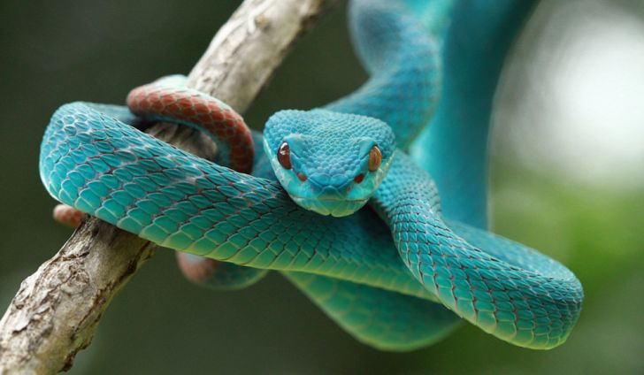

<!-- Lets make a simple snake game -->
<!-- Based on original code created by thecodeplayer.com -->

<!-- create a canvas element for the code to manipulate -->

<canvas id="canvas" width="300" height="300" ></canvas>

<p></p>


<div id="container">
        <br>
        Your score is <span id="final"></span>
        <br>
    </div>
    <div id="score">
        <div>Current Score:<span id="current">Look at the bottom left!!!</span>
        </div>
    </div>
</div>


<!-- And our snake code -->
<script src="snakecore.js"></script>

<input type="button" value="Restart" onclick="init()" id="btn" />
<script>

	//creates the snake ready for the start of the game
	function create_snake()
	{
		snake_array = []; //Empty array to start with
		
		snake_array[0] = {x: 6, y:0}; //position 0 in the array is the head of the snake
		snake_array[1] = {x: 5, y:0};
		snake_array[2] = {x: 4, y:0};
	}

	//set it so that when the user hits a key the keystroke function is called
	document.onkeydown = keystroke;


	function keystroke(evt)
	{
		//TODO: fix this so that it changes the value of direction according to the key
		//Keycodes for arrow keys: left=37, up=38, right=39, down=40
		//Keycodes for wasd: a=65, w=87, d=68, s=83
		//E.g. evt.keyCode==37 is true if the left arrow key was pressed
        //evt = evt || window.event;
        if (evt.keyCode == '38' || evt.keyCode == '87') {
            d = "up";
        }
        else if (evt.keyCode == '40' || evt.keyCode == '83') {
            // down arrow
            d = "down";
        }
        else if (evt.keyCode == '37'|| evt.keyCode == '65') {
            // left arrow
            d = "left";
        }
        else if (evt.keyCode == '39' || evt.keyCode == '68') {
            // right arrow
            d = "right";
        }
    }

	//The movement code for the snake, including eating food, and checking for crashes
	function update_snake(direction)
	{
		//We need to calculate the x position and y position of the new head
		//First get the current position of the head of the snake
		var nx = snake_array[0].x;
		var ny = snake_array[0].y;
		
		//Now adjust these values according to the direction of travel
		if(direction == "right") nx++;
		else if(direction == "left") nx--;
		else if(direction == "up") ny--;
		else if(direction == "down") ny++;
		//nx and ny now contain the new x and new y positions of the head
		//Now check for game over conditions
		//This will restart the game if the snake hits the wall or its own body
		if(check_collision(nx, ny, snake_array) || (snake_array[0].x === obstacle.x && snake_array[0].y === obstacle.y))
		{
			//restart game
            alert('Game Over');
			init();
			return;
		}
		
		var newhead = {x: nx, y: ny};
		snake_array.unshift(newhead); 
		snake_array.pop(); //pops out the last cell (the end of the tail)
        advanceSnake();


    }

    function randomNums(min, max)
    {
	    return Math.round((Math.random() * (max-min) + min));
	}

	//Lets create the food now
	function create_food()
	{
		//TODO: set the food to a random position: x= 0 to maxx, y=0 to maxy
		//Math.random() generates a random number between 0 and 1
		//Math.round(number) rounds the number to the nearest integer
		//The coordinates need to be integers between 0,maxx and 0,maxy
		food = {
			x: randomNums(0, maxx),
			y: randomNums(0, maxy),
		};
    }

    function create_obstacle()
    {

        obstacle =
            {
                x: randomNums(0, maxx),
                y: randomNums(0, maxy),
            };
    }

	//returns true if the snake has hit a wall (this is easy to get wrong by one cell so test your solution)
	//or if it has hit itself (x and y exist in the array)
	function check_collision(x, y, array)
	{
		//TODO: fix this function so that it checks for collisions properly
        for (let i = 4; i < array.length; i++) {
            const didCollide = array[i].x === array[0].x && array[i].y === array[0].y;
            if (didCollide)
                return true;
        }

        const hitLeftWall = array[0].x < 0;
        const hitRightWall = array[0].x > maxx;
        const hitTopWall = array[0].y <0;
        const hitBottomWall = array[0].y > maxy;

        return hitLeftWall || hitRightWall || hitTopWall || hitBottomWall;

    return false;
	}

    function advanceSnake() {
        var newhead = {x: snake_array[0].x, y: snake_array[0].y};
        snake_array.unshift(newhead);
        const didEatFood = snake_array[0].x === food.x && snake_array[0].y === food.y;
        if (didEatFood) {
            create_food();
            snake_array.unshift(newhead);
            score++;
            Score++;
            create_obstacle();
        } else {
            snake_array.pop();
        }
    }


</script>